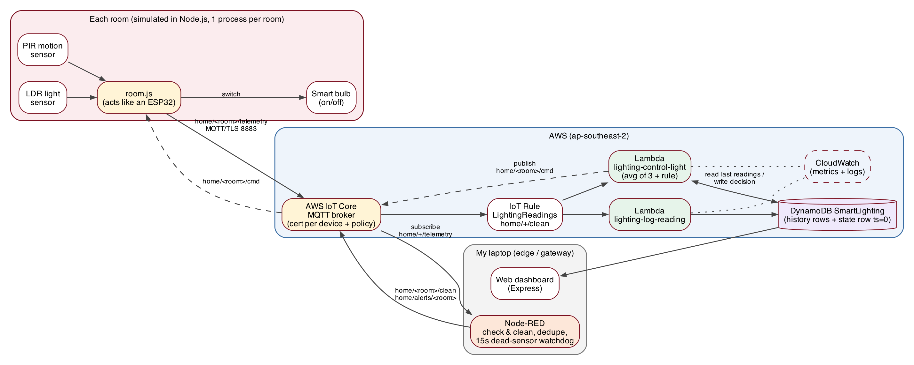
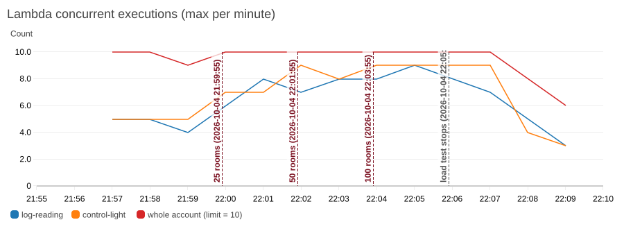
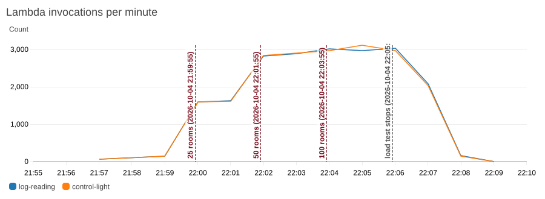
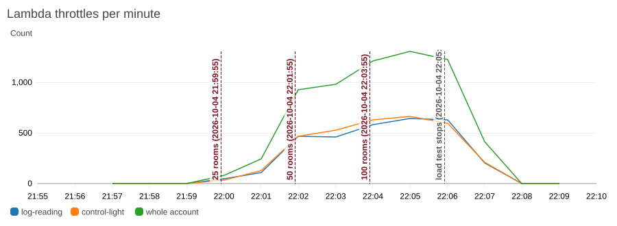
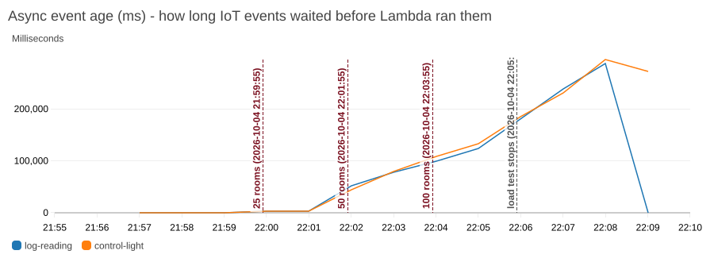

Smart Home Lighting System
I built the smart lighting system from my plan and ran it on real AWS. Each room has a light sensor (LDR), a motion sensor (PIR) and a smart bulb, all simulated in Node.js. Each room connects to AWS IoT Core over MQTT with TLS using its own certificate. Node-RED checks and cleans every reading. An IoT Rule triggers two Lambda functions: one logs the reading and the other decides whether the light should be on. The decision goes back down to the room and the bulb actually switches. Everything ends up in one DynamoDB table, and there's a small dashboard on top.
To show it scales, I ramped an extra 25 → 50 → 100 rooms on top of the 5 "real" ones, each sending a reading every second. I measured it from both ends: how long rooms waited for their on/off commands, and what CloudWatch says AWS was doing. Quick scorecard against the requirements in my plan:
| Requirement (from my plan) | Met? | What actually happened |
|---|---|---|
| Each room sends light + motion every few seconds | Yes | Every 3 s from 5 rooms (load rooms every 1 s) |
| Works out on/off, and that changes the light | Yes | Control Lambda → MQTT command → bulb switches. Median ~400 ms end to end at normal load |
| Readings + decisions saved | Yes | DynamoDB history rows + a current-state row per room |
| Alert if a room stops sending | Yes | Node-RED watchdog alerted 12 s after the bathroom sensor "died" |
| Scalable: 5 → ~100 rooms, no design change | Partly | The same design ran 105 rooms with zero code changes and nothing crashed. But the account's 10-Lambda limit made it slow past ~25–50 rooms, and 6% of load readings were dropped at Node-RED (section 3) |
| Fast: reacts within a couple of seconds | Up to ~25 rooms | 25 rooms: p50 314 ms / p95 813 ms. 100 rooms: p50 22 s |
| Secure: only real devices, encrypted | Yes | Cert per device, policy scoped per room (tested), least-privilege IAM, TLS |
| Doesn't fall over easily | Mostly | Under overload nothing crashed and Lambda dropped 0 events (just delayed them). Node-RED is a single point of failure though |

The flow: a room publishes {lux, motion, light, ts} to home/<room>/telemetry every 3 seconds. Node-RED (on my laptop, acting as the edge/gateway) subscribes to home/+/telemetry. It throws out anything broken (wrong types, lux out of range, room ID not matching the topic, timestamps more than 60s off, duplicates) and republishes the clean reading to home/<room>/clean. It also runs a per-room watchdog that raises an alert on home/alerts/<room> if a room goes quiet for 15 seconds. The IoT Rule SELECT * FROM 'home/+/clean' sends each clean reading to both Lambdas at the same time.
The decision logic (control function) is still just rules, no ML:
Data: one DynamoDB table SmartLighting (on-demand billing). Partition key is roomId, sort key is timestamp. Every reading is a row (raw lux, motion, smoothed lux, decision). Each room also has a special row with timestamp = 0 holding its current state (light, lastSeen, lastMotionAt). Reading that one row is much cheaper than querying history. History rows expire after 7 days using TTL. Both functions use UpdateItem rather than PutItem because they write to the same row at the same time.
How I tested it: I made 100 extra rooms (load-001 to load-100). Each one is a proper IoT thing with its own certificate, so they go through exactly the same path as a real room. loadtest.js runs them across 4 worker processes and ramps 25 → 50 → 100 rooms, 2 minutes per step. Each load room sends every 1 second, which is 3× faster than my normal rooms, so 100 load rooms is about the same traffic as 300 normal ones. The 5 normal rooms kept running the whole time, plus a few minutes before and after as a baseline and cool-down. I measured two things. Each room timed how long it took from sending a reading to getting its on/off command back. I also pulled the CloudWatch metrics and graphs straight from AWS with get-metric-widget-image.
| Load rooms | Readings/s sent | Lambda invocations / min (each fn) | Throttles / min (both fns) | Longest wait in queue | Command latency p50 / p95 |
|---|---|---|---|---|---|
| 0 (baseline, 5 rooms) | 1.7 | 70–144 | 0 | 0.1 s | ~0.3–1 s |
| 25 | 24.4 | ~1,600 | 82 → 243 | 3.4 s | 314 ms / 813 ms |
| 50 | 49.3 | ~2,860 | 931 → 985 | 80 s | 1.5 s / 43.5 s |
| 100 | 98.7 | ~3,000 (flat!) | 1,215 → 1,307 | 133 s | 22.4 s / 83.8 s |




What this shows:
AsyncEventsDropped was 0 every minute. All 6,400 throttles were retried. So overloading it made it slow, not broken.PublishOut.Throttle = 214 at 22:05), so messages arrived late and out of order. My duplicate filter ("must be newer than the last one") then threw out 721 as "duplicate/old" and 306 as more than 60 s late, which accounts for most of the missing ones. Node-RED's CPU was fine. It was the single connection and my too-strict filter.So is it scalable? The design is. Going from 5 to 105 rooms needed no code or design changes: IoT Core took everything the rooms sent, Lambda scaled out automatically, and DynamoDB didn't notice. What capped it were two limits I hadn't planned for: the new account's Lambda concurrency (10) and the per-connection throughput of my single Node-RED gateway. Both are fixable with config, not a redesign (section 6), but I couldn't fully prove it scales past ~25–50 rooms on this account.
Every device (and Node-RED) has its own X.509 certificate. The IoT policy uses ${iot:Connection.Thing.ThingName}, so a device can only connect as itself, publish to its own telemetry topic and subscribe to its own cmd topic. The 100 load-test rooms got their own certs too, so the load test went through the exact same security as a real device. Each Lambda has its own IAM role with only what it needs. The log function can only UpdateItem on the one table. The control function can only Query/Get/Update that table and publish to home/*/cmd. Data is encrypted in transit (TLS to IoT Core on port 8883) and at rest (DynamoDB default encryption). I tested the policy with the lounge's certificate. Publishing to its own topic worked. Trying to publish to the kitchen's topic, connecting with the kitchen's client ID, and connecting with no certificate all got the connection killed by AWS (security_test.log).
basedOn timestamp is more than a few seconds old, and the control function should skip readings that are already stale. I ran out of time to add and re-test that, so it's the first thing on my fix list.WHERE lux >= 0 AND ...), or Node-RED could run as 2+ instances using MQTT shared subscriptions. It also turned out to be a throughput limit at 100 rooms (section 3). Shared subscriptions ($share/nodered/home/+/telemetry) would spread the readings over several connections, and the duplicate filter should remember a short window of recent timestamps instead of only the newest one.home/<houseId>/<room>/... and the partition key houseId#roomId. The policy variable trick still works, so nothing else in the design has to change.room.js without touching anything above the MQTT connection, since it would use the same cert, topics and payload.All the functional requirements from my plan work on real AWS: readings every few seconds, automatic on/off, everything saved, offline alerts, and per-device security that I actually tested. The scalability test was the most useful part, even though the result wasn't the perfect graph I was hoping for. The serverless design scaled as far as my account allowed. IoT Core took 100 msg/s from the rooms without an error, but Lambda hit the new-account limit of 10 at roughly 25–50 rooms, and my single Node-RED connection hit IoT Core's per-connection limit at 100 rooms. Past that point nothing crashed and Lambda didn't drop anything, but everything got very slow and 6% of readings were lost at the gateway. That's exactly the kind of thing you only find by load testing. If I did this again I'd request the quota increase on day one, add send jitter and stale-command checks to the devices, put a queue in front of the functions, and spread Node-RED over shared subscriptions.
All of these are in the evidence/ folder of the repo. Logs are the real terminal output from the runs (I just saved them with tee).
| File | What it shows |
|---|---|
setup.log | infra/setup.sh creating everything on a brand new AWS account |
bug_flicker_run1.log | first full run with the plan's single-threshold rule – 61 light switches in ~90s (the flicker bug) |
house_run2.log | run after the hysteresis fix, with the bathroom sensor "dying" after 60s |
nodered_run1.log, nodered_run2.log | Node-RED output: offline/back-online alerts, rejected readings (incl. the duplicate-seq bug) |
security_test.log | lounge's cert trying to publish as / connect as the kitchen, and connecting with no cert |
dynamodb_sample_bedroom1.json, dynamodb_state_row_bedroom1.json | real rows from the table (history rows + the timestamp-0 state row) |
lambda_control_logs_sample.txt | CloudWatch REPORT lines for the control function (duration, memory) |
loadtest_*.json, loadtest_console.log | load test results per step (messages, commands, latency percentiles) |
house_during_loadtest.log | the 5 normal rooms, which kept running the whole time the load test was on |
cloudwatch/*.png | graphs pulled straight from CloudWatch with get-metric-widget-image |
cloudwatch/per_minute.json, metric_data.json | the raw per-minute CloudWatch numbers behind the graphs |
nodered_flow.png, dashboard.png | screenshots of the Node-RED editor and the dashboard |
Everything is in my local git repo sit314_distinction (GitHub link: to be added). The Node-RED flows.json is generated by buildflow.js, so I've put that script here instead of the 300-line JSON.
// One simulated room = LDR light sensor + PIR motion sensor + a smart bulb, pretending to be an ESP32.
// Connects to AWS IoT Core over MQTT/TLS with its own certificate.
// node simulator/room.js lounge -> run one room
// node simulator/room.js bathroom --die-after=60 -> sensor "dies" after 60s (to test the offline alert)
const fs = require('fs');
const mqtt = require('mqtt');
const cfg = require('../config');
const LAMP_LUX = 350; // how much the bulb adds to what the LDR sees when it's on
function daylight(hour) {
// rough sun curve: 0 before 6am / after 7pm, peaks ~800 lux around lunchtime
if (hour < 6 || hour > 19) return 0;
return Math.sin(Math.PI * (hour - 6) / 13) * 800;
}
class Room {
constructor(id, opts = {}) {
this.id = id;
this.windowFactor = opts.windowFactor ?? 0.5;
this.everyMs = opts.everyMs || cfg.sendEveryMs;
this.quiet = opts.quiet || false;
this.dieAfterMs = opts.dieAfterMs || 0;
this.light = 'off';
this.occupied = Math.random() < 0.5;
this.seq = 0;
this.stats = { sent: 0, cmds: 0, latencies: [] };
}
readLux() {
const hour = process.env.SIM_HOUR ? Number(process.env.SIM_HOUR) : new Date().getHours() + new Date().getMinutes() / 60;
let lux = 20 + daylight(hour) * this.windowFactor + (Math.random() - 0.5) * 60; // 20 lux of background + noise
if (this.light === 'on') lux += LAMP_LUX;
return Math.max(0, Math.round(lux));
}
readMotion() {
// people come and go randomly; while someone's in the room the PIR doesn't fire every time (sitting still etc.)
if (this.occupied && Math.random() < 0.05) this.occupied = false;
else if (!this.occupied && Math.random() < 0.04) this.occupied = true;
return this.occupied && Math.random() < 0.6;
}
start() {
const c = cfg.certDir;
this.client = mqtt.connect(`mqtts://${cfg.endpoint}:8883`, {
clientId: this.id,
key: fs.readFileSync(`${c}/${this.id}.private.key`),
cert: fs.readFileSync(`${c}/${this.id}.cert.pem`),
ca: fs.readFileSync(`${c}/AmazonRootCA1.pem`),
reconnectPeriod: 2000,
});
this.client.on('connect', () => {
this.log('connected to IoT Core');
this.client.subscribe(`home/${this.id}/cmd`, { qos: 1 });
});
this.client.on('error', e => this.log('mqtt error: ' + e.message, true));
this.client.on('message', (_t, buf) => this.onCommand(JSON.parse(buf)));
this.timer = setInterval(() => this.sendReading(), this.everyMs);
if (this.dieAfterMs) setTimeout(() => { clearInterval(this.timer); this.log('*** sensor died (stopped sending) ***', true); }, this.dieAfterMs);
}
sendReading() {
if (!this.client.connected) return;
const msg = { roomId: this.id, ts: Date.now(), seq: ++this.seq, lux: this.readLux(), motion: this.readMotion(), light: this.light };
this.client.publish(`home/${this.id}/telemetry`, JSON.stringify(msg), { qos: 1 });
this.stats.sent++;
this.log(`lux=${String(msg.lux).padStart(4)} motion=${msg.motion ? 'Y' : '-'} light=${this.light}`);
}
onCommand(cmd) {
this.stats.cmds++;
const latency = cmd.basedOn ? Date.now() - cmd.basedOn : null; // time from the reading being sent to the command arriving
if (latency != null) this.stats.latencies.push(latency);
if (cmd.state !== this.light) {
this.light = cmd.state;
this.log(`>>> light switched ${cmd.state.toUpperCase()} (${cmd.reason}) latency=${latency}ms`, true);
}
}
stop() { clearInterval(this.timer); this.client?.end(true); }
log(s, important = false) {
if (this.quiet && !important) return;
console.log(`[${new Date().toLocaleTimeString('en-AU', { hour12: false })}] ${this.id.padEnd(9)} ${s}`);
}
}
module.exports = { Room };
if (require.main === module) {
const id = process.argv[2];
const room = cfg.rooms.find(r => r.id === id) || { id, windowFactor: 0.5 };
const die = process.argv.find(a => a.startsWith('--die-after='));
new Room(id, { windowFactor: room.windowFactor, dieAfterMs: die ? Number(die.split('=')[1]) * 1000 : 0 }).start();
}
// starts all 5 rooms, one Node.js process each (like 5 separate ESP32s)
// extra args get passed through, e.g. node simulator/house.js --die=bathroom:60
const { fork } = require('child_process');
const cfg = require('../config');
const die = (process.argv.find(a => a.startsWith('--die=')) || '').replace('--die=', '').split(':');
for (const r of cfg.rooms) {
const args = [r.id];
if (die[0] === r.id) args.push(`--die-after=${die[1]}`);
fork(__dirname + '/room.js', args);
}
console.log(`started ${cfg.rooms.length} rooms: ${cfg.rooms.map(r => r.id).join(', ')}`);
// Lambda 1: Log Function - saves every cleaned reading into DynamoDB + bumps the room's lastSeen.
// Triggered by the IoT Rule on topic home/+/clean (Node-RED publishes there after checking the data).
import { DynamoDBClient } from '@aws-sdk/client-dynamodb';
import { DynamoDBDocumentClient, UpdateCommand } from '@aws-sdk/lib-dynamodb';
const db = DynamoDBDocumentClient.from(new DynamoDBClient({}));
const TABLE = process.env.TABLE_NAME;
const KEEP_DAYS = 7; // TTL so the history doesn't just grow forever
export const handler = async (r) => {
const expiresAt = Math.floor(r.ts / 1000) + KEEP_DAYS * 86400;
// UpdateItem instead of PutItem because the control function writes to the same row at the same time,
// and Put would wipe out whatever it already wrote
await db.send(new UpdateCommand({
TableName: TABLE,
Key: { roomId: r.roomId, timestamp: r.ts },
UpdateExpression: 'SET rawLux = :lux, motionDetected = :m, reportedLight = :l, expiresAt = :e',
ExpressionAttributeValues: { ':lux': r.lux, ':m': r.motion, ':l': r.light, ':e': expiresAt },
}));
// timestamp 0 = the "current state" row for each room (one table, so this is my little shortcut)
await db.send(new UpdateCommand({
TableName: TABLE,
Key: { roomId: r.roomId, timestamp: 0 },
UpdateExpression: 'SET lastSeen = :ts, lastRawLux = :lux',
ExpressionAttributeValues: { ':ts': r.ts, ':lux': r.lux },
}));
return { saved: `${r.roomId}#${r.ts}` };
};
// Lambda 2: Control Function - decides if the light should be on or off and sends the command back down.
// Triggered by the same IoT Rule as the log function (home/+/clean).
import { DynamoDBClient } from '@aws-sdk/client-dynamodb';
import { DynamoDBDocumentClient, QueryCommand, GetCommand, UpdateCommand } from '@aws-sdk/lib-dynamodb';
import { IoTDataPlaneClient, PublishCommand } from '@aws-sdk/client-iot-data-plane';
const db = DynamoDBDocumentClient.from(new DynamoDBClient({}));
const iot = new IoTDataPlaneClient({ endpoint: `https://${process.env.IOT_ENDPOINT}` });
const TABLE = process.env.TABLE_NAME;
const DARK = 250; // lux - below this the room counts as dark
const BRIGHT = 650; // lux - once the light is ON it has to be brighter than this before it turns off for brightness.
// the bulb itself adds ~350 lux to what the sensor sees, so without this gap the light
// turned itself off straight away and flickered every few seconds (found this on my first test run)
const OFF_DELAY_MS = 30000; // wait 30s after the last motion before switching off
export const handler = async (r) => {
// smoothing: average this reading with the previous 2.
// (the log function runs in parallel so this reading might not be in the table yet - that's why I add r.lux myself)
const prev = await db.send(new QueryCommand({
TableName: TABLE,
KeyConditionExpression: 'roomId = :id AND #t BETWEEN :from AND :to',
ExpressionAttributeNames: { '#t': 'timestamp' },
ExpressionAttributeValues: { ':id': r.roomId, ':from': 1, ':to': r.ts - 1 },
ScanIndexForward: false, // newest first
Limit: 2,
}));
const luxes = [r.lux, ...prev.Items.map(i => i.rawLux).filter(x => x != null)];
const avgLux = Math.round(luxes.reduce((a, b) => a + b, 0) / luxes.length);
const state = (await db.send(new GetCommand({ TableName: TABLE, Key: { roomId: r.roomId, timestamp: 0 } }))).Item || {};
const lastMotionAt = r.motion ? r.ts : (state.lastMotionAt || 0);
const motionRecent = r.ts - lastMotionAt < OFF_DELAY_MS;
// the actual rule: someone's been here recently AND it's dark -> on, otherwise off
// (with two thresholds so the light doesn't count its own glow as daylight)
const threshold = r.light === 'on' ? BRIGHT : DARK;
const isDark = avgLux < threshold;
const decision = motionRecent && isDark ? 'on' : 'off';
const reason = !motionRecent ? 'no motion for 30s' : isDark ? `dark (avg ${avgLux} < ${threshold} lux) + motion` : `bright enough (avg ${avgLux} > ${threshold} lux)`;
// only send a command if the light isn't already in the right state
if (decision !== r.light) {
await iot.send(new PublishCommand({
topic: `home/${r.roomId}/cmd`,
qos: 1,
payload: JSON.stringify({ state: decision, reason, avgLux, basedOn: r.ts }),
}));
}
await db.send(new UpdateCommand({
TableName: TABLE,
Key: { roomId: r.roomId, timestamp: r.ts },
UpdateExpression: 'SET lightLevel = :avg, lightState = :s',
ExpressionAttributeValues: { ':avg': avgLux, ':s': decision },
}));
await db.send(new UpdateCommand({
TableName: TABLE,
Key: { roomId: r.roomId, timestamp: 0 },
UpdateExpression: 'SET lightState = :s, lightLevel = :avg, lastMotionAt = :lm, motionDetected = :m, reason = :why',
ExpressionAttributeValues: { ':s': decision, ':avg': avgLux, ':lm': lastMotionAt, ':m': r.motion, ':why': reason },
}));
return { roomId: r.roomId, decision, avgLux, sentCommand: decision !== r.light };
};
// generates flows.json for Node-RED (easier than dragging 15 nodes around by hand every time I change something)
// run: node nodered/buildflow.js then node-red --userDir nodered
const fs = require('fs');
const path = require('path');
const cfg = require('../config');
const certs = path.resolve(__dirname, '../certs');
const tab = 'tab_lighting';
const n = (id, type, x, y, props = {}, wires = []) => ({ id, type, z: tab, x, y, wires, ...props });
const validateFn = `
// checks each reading before it goes anywhere near the cloud functions
const room = msg.topic.split('/')[1];
const r = msg.payload;
const problems = [];
if (typeof r !== 'object' || r === null) problems.push('not valid JSON');
else {
if (r.roomId !== room) problems.push('roomId does not match topic');
if (typeof r.lux !== 'number' || isNaN(r.lux) || r.lux < 0 || r.lux > 100000) problems.push('lux missing/out of range');
if (typeof r.motion !== 'boolean') problems.push('motion should be true/false');
if (r.light !== 'on' && r.light !== 'off') problems.push('light state should be on/off');
if (typeof r.ts !== 'number' || Math.abs(Date.now() - r.ts) > 60000) problems.push('timestamp missing or more than 60s off');
}
// QoS 1 can deliver the same message twice, so drop anything that isn't newer than the last one from that room.
// (I used the seq number at first, but it resets to 1 when a device restarts, so after a reboot EVERYTHING
// got thrown away as a duplicate. The device timestamp doesn't have that problem.)
const seen = context.get('lastTs') || {};
if (!problems.length && seen[room] && r.ts <= seen[room]) problems.push('duplicate/old (ts ' + r.ts + ')');
const stats = context.get('stats') || { ok: 0, bad: 0 };
if (problems.length) {
stats.bad++; context.set('stats', stats);
node.status({ fill: 'yellow', shape: 'dot', text: stats.ok + ' ok / ' + stats.bad + ' rejected' });
return [null, { topic: room, payload: { room, problems, original: r } }];
}
seen[room] = r.ts; context.set('lastTs', seen);
stats.ok++; context.set('stats', stats);
if (stats.ok % 10 === 0) node.status({ fill: 'green', shape: 'dot', text: stats.ok + ' ok / ' + stats.bad + ' rejected' });
msg.topic = 'home/' + room + '/clean';
msg.payload = { roomId: room, ts: r.ts, lux: Math.round(r.lux), motion: r.motion, light: r.light, receivedAt: Date.now() };
return [msg, null];`;
const onlineFn = `
// if a room that was flagged offline starts talking again, say so
const room = msg.topic.split('/')[1];
const offline = flow.get('offline') || {};
if (offline[room]) {
delete offline[room]; flow.set('offline', offline);
node.warn('room ' + room + ' is back online');
node.send([null, { topic: 'home/alerts/' + room, payload: { roomId: room, alert: 'back-online', at: Date.now() } }]);
}
return [msg, null];`;
const alertFn = `
// the trigger node only lets a message through here if a room has gone quiet for ${cfg.offlineAfterMs / 1000}s
const room = msg.topic.split('/')[1];
const offline = flow.get('offline') || {};
offline[room] = Date.now(); flow.set('offline', offline);
const lastSeen = msg.payload && msg.payload.ts;
msg.topic = 'home/alerts/' + room;
msg.payload = { roomId: room, alert: 'offline', lastSeen, at: Date.now(), message: 'no data from ' + room + ' for ${cfg.offlineAfterMs / 1000}s - sensor probably dead' };
node.status({ fill: 'red', shape: 'ring', text: room + ' OFFLINE' });
return msg;`;
const flows = [
{ id: tab, type: 'tab', label: 'Smart Lighting', info: 'room sensors -> check & clean -> AWS (IoT rule -> Lambdas)' },
{ id: 'broker', type: 'mqtt-broker', name: 'AWS IoT Core', broker: cfg.endpoint, port: '8883', clientid: 'nodered-gateway',
usetls: true, tls: 'tls', protocolVersion: '4', keepalive: '60', cleansession: true, autoConnect: true,
birthTopic: '', closeTopic: '', willTopic: '' },
{ id: 'tls', type: 'tls-config', name: 'nodered-gateway cert', cert: `${certs}/nodered-gateway.cert.pem`,
key: `${certs}/nodered-gateway.private.key`, ca: `${certs}/AmazonRootCA1.pem`, certname: '', keyname: '', caname: '',
servername: '', verifyservercert: true },
{ id: 'c1', type: 'comment', z: tab, name: '1) readings from every room -> check & clean -> back to IoT Core on home/<room>/clean (IoT Rule sends them to the Lambdas)', x: 470, y: 40, wires: [] },
n('in', 'mqtt in', 140, 100, { name: 'home/+/telemetry', topic: 'home/+/telemetry', qos: '1', datatype: 'json', broker: 'broker', nl: false, rap: true, rh: 0, inputs: 0 }, [['online']]),
n('online', 'function', 360, 100, { name: 'back online?', func: onlineFn, outputs: 2 }, [['validate', 'watchdog'], ['alertOut', 'alertDbg']]),
n('validate', 'function', 580, 100, { name: 'check & clean', func: validateFn, outputs: 2 }, [['cleanOut'], ['rejDbg']]),
n('cleanOut', 'mqtt out', 830, 80, { name: 'home/<room>/clean', topic: '', qos: '1', retain: 'false', broker: 'broker' }),
n('rejDbg', 'debug', 830, 140, { name: 'REJECTED reading', active: true, tosidebar: true, console: true, complete: 'payload', targetType: 'msg' }),
{ id: 'c2', type: 'comment', z: tab, name: '2) watchdog - if a room goes quiet for 15s, raise an offline alert', x: 330, y: 220, wires: [] },
n('watchdog', 'trigger', 380, 280, { name: 'wait 15s (reset on each msg, per room)', op1: '', op2: '', op1type: 'nul', op2type: 'payl',
duration: String(cfg.offlineAfterMs / 1000), extend: true, overrideDelay: false, units: 's', reset: '', bytopic: 'topic', topic: 'topic', outputs: 1 }, [['alert']]),
n('alert', 'function', 640, 280, { name: 'build offline alert', func: alertFn, outputs: 1 }, [['alertOut', 'alertDbg']]),
n('alertOut', 'mqtt out', 870, 260, { name: 'home/alerts/<room>', topic: '', qos: '1', retain: 'false', broker: 'broker' }),
n('alertDbg', 'debug', 860, 320, { name: 'ALERT', active: true, tosidebar: true, console: true, complete: 'payload', targetType: 'msg' }),
{ id: 'c3', type: 'comment', z: tab, name: '3) test: push some broken readings through the checker', x: 290, y: 380, wires: [] },
n('bad1', 'inject', 160, 430, { name: 'bad lux + motion', props: [{ p: 'payload' }, { p: 'topic', vt: 'str' }], topic: 'home/lounge/telemetry',
payload: '{"roomId":"lounge","ts":0,"lux":-50,"motion":"yes","light":"on"}', payloadType: 'json', repeat: '', once: false }, [['validate']]),
n('bad2', 'inject', 170, 480, { name: 'wrong room in topic', props: [{ p: 'payload' }, { p: 'topic', vt: 'str' }], topic: 'home/kitchen/telemetry',
payload: '{"roomId":"lounge","ts":1,"lux":100,"motion":true,"light":"off"}', payloadType: 'json', repeat: '', once: false }, [['validate']]),
];
fs.writeFileSync(__dirname + '/flows.json', JSON.stringify(flows, null, 2));
console.log('wrote nodered/flows.json with', flows.length, 'nodes');
// Load test: ramps up simulated rooms in steps (e.g. 25 -> 50 -> 100) so I can see Lambda scale up, then stops so I can see it scale down.
// Every load room is a proper device with its own cert, it's just that several rooms share one Node.js process
// (100 separate node processes = ~4GB of RAM on my laptop, so I split them over a few worker processes instead).
//
// node loadtest/loadtest.js --steps=25,50,100 --step-secs=120 --every=1000 --workers=4
const { fork } = require('child_process');
const fs = require('fs');
const arg = (k, d) => (process.argv.find(a => a.startsWith(`--${k}=`)) || `=${d}`).split('=')[1];
if (process.argv[2] === '--worker') return worker();
const steps = arg('steps', '25,50,100').split(',').map(Number);
const stepSecs = Number(arg('step-secs', 120));
const every = Number(arg('every', 1000));
const workers = Number(arg('workers', 4));
const total = Math.max(...steps);
const startedAt = Date.now();
console.log(`load test: steps ${steps.join(' -> ')} rooms, ${stepSecs}s each, every room sends every ${every}ms, ${workers} worker processes`);
console.log(`started ${new Date(startedAt).toISOString()}`);
// work out when each room should start (room i joins at the first step that includes it)
const rooms = [];
for (let i = 0; i < total; i++) {
const step = steps.findIndex(s => i < s);
rooms.push({ id: `load-${String(i + 1).padStart(3, '0')}`, startAfterMs: step * stepSecs * 1000 + (i % 25) * 200, step });
}
const results = [];
let done = 0;
for (let w = 0; w < workers; w++) {
const mine = rooms.filter((_, i) => i % workers === w);
const child = fork(__filename, ['--worker']);
child.send({ rooms: mine, every, nSteps: steps.length, stopAtMs: steps.length * stepSecs * 1000 });
child.on('message', m => {
if (m.type === 'progress') return;
results.push(...m.rooms);
if (++done === workers) report();
});
}
// print a line every 10s so I can see it's going
const tick = setInterval(() => {
const secs = Math.round((Date.now() - startedAt) / 1000);
const step = Math.min(Math.floor(secs / stepSecs), steps.length - 1);
console.log(` t=${secs}s step ${step + 1}/${steps.length} (${steps[step]} rooms)`);
}, 10000);
function pct(arr, p) { if (!arr.length) return null; const s = [...arr].sort((a, b) => a - b); return s[Math.min(s.length - 1, Math.floor(p / 100 * s.length))]; }
function report() {
clearInterval(tick);
const endedAt = Date.now();
const summary = { startedAt: new Date(startedAt).toISOString(), endedAt: new Date(endedAt).toISOString(), steps, stepSecs, everyMs: every, workers, perStep: [] };
steps.forEach((s, k) => {
const lat = results.flatMap(r => r.latencies.filter(l => l.step === k).map(l => l.ms));
const sent = results.reduce((a, r) => a + r.sentPerStep[k], 0);
summary.perStep.push({ rooms: s, messagesSent: sent, msgPerSec: +(sent / stepSecs).toFixed(1), commandsReceived: lat.length,
latencyMs: { p50: pct(lat, 50), p95: pct(lat, 95), p99: pct(lat, 99), max: lat.length ? Math.max(...lat) : null } });
});
summary.totalSent = results.reduce((a, r) => a + r.sent, 0);
summary.totalCommands = results.reduce((a, r) => a + r.cmds, 0);
summary.connectErrors = results.reduce((a, r) => a + r.errors, 0);
console.log('\n=== results ===');
console.table(summary.perStep.map(p => ({ rooms: p.rooms, 'msgs sent': p.messagesSent, 'msg/s': p.msgPerSec, 'cmds back': p.commandsReceived,
'p50 ms': p.latencyMs.p50, 'p95 ms': p.latencyMs.p95, 'p99 ms': p.latencyMs.p99, 'max ms': p.latencyMs.max })));
console.log(`total sent ${summary.totalSent}, commands received ${summary.totalCommands}, mqtt errors ${summary.connectErrors}`);
const out = `${__dirname}/../evidence/loadtest_${new Date(startedAt).toISOString().slice(0, 16).replace(/:/g, '')}.json`;
fs.writeFileSync(out, JSON.stringify(summary, null, 2));
console.log('saved', out);
process.exit(0);
}
function worker() {
const { Room } = require('../simulator/room');
process.on('message', ({ rooms, every, nSteps, stopAtMs }) => {
const t0 = Date.now();
const live = rooms.map(r => {
const room = new Room(r.id, { windowFactor: Math.random(), everyMs: every, quiet: true });
room.sentPerStep = {}; room.errors = 0;
// wrap so I know which step each message/latency belongs to
const send = room.sendReading.bind(room);
room.sendReading = () => { const before = room.stats.sent; send(); if (room.stats.sent > before) { const k = step(); room.sentPerStep[k] = (room.sentPerStep[k] || 0) + 1; } };
const onCmd = room.onCommand.bind(room);
room.onCommand = cmd => { onCmd(cmd); if (cmd.basedOn) room.lat.push({ step: step(), ms: Date.now() - cmd.basedOn }); };
room.lat = [];
setTimeout(() => { room.start(); room.client.on('error', () => room.errors++); }, r.startAfterMs);
return room;
});
function step() { return Math.min(Math.floor((Date.now() - t0) / (stopAtMs / nSteps)), nSteps - 1); }
setTimeout(() => {
live.forEach(r => r.stop());
process.send({ type: 'done', rooms: live.map(r => ({ id: r.id, sent: r.stats.sent, cmds: r.stats.cmds, errors: r.errors, latencies: r.lat,
sentPerStep: Array.from({ length: nSteps }, (_, k) => r.sentPerStep[k] || 0) })) });
setTimeout(() => process.exit(0), 500);
}, stopAtMs);
});
}
// pulls the CloudWatch graphs for a load test run straight from AWS (GetMetricWidgetImage) + the raw numbers (GetMetricData)
// node loadtest/cloudwatch-graphs.js evidence/loadtest_XXXX.json
const { execFileSync } = require('child_process');
const fs = require('fs');
const run = JSON.parse(fs.readFileSync(process.argv[2], 'utf8'));
const t0 = new Date(run.startedAt), t1 = new Date(run.endedAt);
const start = new Date(t0 - 4 * 60000).toISOString(); // 4 min of baseline before
const end = new Date(+t1 + 5 * 60000).toISOString(); // 5 min of cool-down after
const out = __dirname + '/../evidence/cloudwatch';
fs.mkdirSync(out, { recursive: true });
// vertical lines where each step started/ended
const marks = run.steps.map((s, k) => ({ label: `${s} rooms`, value: new Date(+t0 + k * run.stepSecs * 1000).toISOString(), color: '#7b1020' }));
marks.push({ label: 'load test stops', value: run.endedAt, color: '#555555' });
const fns = ['lighting-log-reading', 'lighting-control-light'];
const lambda = (metric) => fns.map(f => ['AWS/Lambda', metric, 'FunctionName', f, { label: f.replace('lighting-', '') }]);
const graphs = {
lambda_concurrency: { title: 'Lambda concurrent executions (max per minute)', stat: 'Maximum', metrics: [...lambda('ConcurrentExecutions'), ['AWS/Lambda', 'ConcurrentExecutions', { label: 'whole account (limit = 10)', color: '#d62728' }]] },
lambda_invocations: { title: 'Lambda invocations per minute', stat: 'Sum', metrics: lambda('Invocations') },
lambda_duration: { title: 'Lambda duration (ms, average)', stat: 'Average', metrics: lambda('Duration') },
lambda_throttles: { title: 'Lambda throttles per minute', stat: 'Sum', metrics: [...lambda('Throttles'), ['AWS/Lambda', 'Throttles', { label: 'whole account' }]] },
lambda_async_age: { title: 'Async event age (ms) - how long IoT events waited before Lambda ran them', stat: 'Maximum', metrics: lambda('AsyncEventAge') },
iot_messages: { title: 'IoT Core messages per minute', stat: 'Sum', metrics: [
['AWS/IoT', 'PublishIn.Success', 'Protocol', 'MQTT', { label: 'published in (rooms + Node-RED)' }],
['AWS/IoT', 'PublishOut.Success', 'Protocol', 'MQTT', { label: 'delivered out (to Node-RED + rooms)' }],
['AWS/IoT', 'TopicMatch', 'RuleName', 'LightingReadings', { label: 'IoT Rule matches' }]] },
dynamodb_writes: { title: 'DynamoDB consumed write capacity per minute', stat: 'Sum', metrics: [['AWS/DynamoDB', 'ConsumedWriteCapacityUnits', 'TableName', 'SmartLighting', { label: 'write units' }],
['AWS/DynamoDB', 'ConsumedReadCapacityUnits', 'TableName', 'SmartLighting', { label: 'read units' }]] },
};
for (const [name, g] of Object.entries(graphs)) {
const widget = { width: 900, height: 330, start, end, period: 60, stat: g.stat, view: 'timeSeries', title: g.title, metrics: g.metrics,
annotations: { vertical: marks }, yAxis: { left: { min: 0 } }, legend: { position: 'bottom' }, timezone: '+1100' };
const b64 = execFileSync('aws', ['cloudwatch', 'get-metric-widget-image', '--metric-widget', JSON.stringify(widget), '--output', 'text', '--query', 'MetricWidgetImage']).toString();
fs.writeFileSync(`${out}/${name}.png`, Buffer.from(b64, 'base64'));
console.log('saved', name + '.png');
}
// raw numbers (per minute) so I can put actual values in the report, not just squint at graphs
const queries = [];
const q = (id, ns, metric, dims, stat) => queries.push({ Id: id, MetricStat: { Metric: { Namespace: ns, MetricName: metric, Dimensions: dims }, Period: 60, Stat: stat } });
fns.forEach((f, i) => {
const d = [{ Name: 'FunctionName', Value: f }];
q(`conc${i}`, 'AWS/Lambda', 'ConcurrentExecutions', d, 'Maximum');
q(`inv${i}`, 'AWS/Lambda', 'Invocations', d, 'Sum');
q(`dur${i}`, 'AWS/Lambda', 'Duration', d, 'Average');
q(`p99${i}`, 'AWS/Lambda', 'Duration', d, 'p99');
q(`thr${i}`, 'AWS/Lambda', 'Throttles', d, 'Sum');
q(`age${i}`, 'AWS/Lambda', 'AsyncEventAge', d, 'Maximum');
q(`drop${i}`, 'AWS/Lambda', 'AsyncEventsDropped', d, 'Sum');
q(`recv${i}`, 'AWS/Lambda', 'AsyncEventsReceived', d, 'Sum');
});
q('accConc', 'AWS/Lambda', 'ConcurrentExecutions', [], 'Maximum');
q('pubIn', 'AWS/IoT', 'PublishIn.Success', [{ Name: 'Protocol', Value: 'MQTT' }], 'Sum');
q('ruleMatch', 'AWS/IoT', 'TopicMatch', [{ Name: 'RuleName', Value: 'LightingReadings' }], 'Sum');
q('wcu', 'AWS/DynamoDB', 'ConsumedWriteCapacityUnits', [{ Name: 'TableName', Value: 'SmartLighting' }], 'Sum');
const data = JSON.parse(execFileSync('aws', ['cloudwatch', 'get-metric-data', '--start-time', start, '--end-time', end, '--metric-data-queries', JSON.stringify(queries), '--output', 'json']).toString());
fs.writeFileSync(`${out}/metric_data.json`, JSON.stringify(data, null, 2));
// one row per minute
const rows = {};
for (const r of data.MetricDataResults) r.Timestamps.forEach((t, i) => { (rows[t] ||= {})[r.Id] = Math.round(r.Values[i] * 10) / 10; });
const table = Object.keys(rows).sort().map(t => ({ minute: new Date(t).toLocaleTimeString('en-AU', { hour12: false, timeZone: 'Australia/Melbourne' }).slice(0, 5), ...rows[t] }));
console.table(table);
fs.writeFileSync(`${out}/per_minute.json`, JSON.stringify(table, null, 2));
// checks the IoT policy actually stops a device pretending to be another room
// test 1: lounge's cert tries to publish to kitchen's topic -> AWS should kick it off
// test 2: lounge's cert tries to connect with clientId "kitchen" -> AWS should refuse the connection
// test 3: no certificate at all -> TLS handshake should fail
const fs = require('fs');
const mqtt = require('mqtt');
const cfg = require('../config');
const c = cfg.certDir;
const lounge = { key: fs.readFileSync(`${c}/lounge.private.key`), cert: fs.readFileSync(`${c}/lounge.cert.pem`), ca: fs.readFileSync(`${c}/AmazonRootCA1.pem`) };
const url = `mqtts://${cfg.endpoint}:8883`;
const log = s => console.log(`[${new Date().toLocaleTimeString('en-AU', { hour12: false })}] ${s}`);
function attempt(name, opts, after) {
return new Promise(done => {
log(`--- ${name}`);
const cl = mqtt.connect(url, { ...opts, reconnectPeriod: 0, connectTimeout: 5000 });
let over = false;
const finish = msg => { if (over) return; over = true; log(msg); cl.end(true); setTimeout(done, 300); };
cl.on('connect', () => { log('connected'); after ? after(cl, finish) : finish('result: connected OK'); });
cl.on('error', e => finish('result: error -> ' + e.message));
cl.on('close', () => finish('result: connection closed by AWS'));
});
}
(async () => {
await attempt('control: lounge cert, clientId lounge, publish to home/lounge/telemetry', { ...lounge, clientId: 'lounge' }, (cl, finish) =>
cl.publish('home/lounge/telemetry', JSON.stringify({ roomId: 'lounge', ts: Date.now(), lux: 10, motion: false, light: 'off' }), { qos: 1 },
e => finish(e ? 'result: publish failed ' + e.message : 'result: publish accepted (PUBACK received) - expected')));
await attempt('test 1: lounge cert publishes to home/kitchen/telemetry', { ...lounge, clientId: 'lounge' }, (cl, finish) =>
cl.publish('home/kitchen/telemetry', JSON.stringify({ roomId: 'kitchen', ts: Date.now(), lux: 999, motion: true, light: 'off' }), { qos: 1 },
e => finish(e ? 'result: publish failed ' + e.message : 'result: publish accepted ?!')));
await attempt('test 2: lounge cert connects as clientId "kitchen"', { ...lounge, clientId: 'kitchen' });
await attempt('test 3: no client certificate', { ca: lounge.ca, clientId: 'lounge' });
process.exit(0);
})();
// tiny dashboard - reads each room's current state row (timestamp 0) + recent history from DynamoDB
// runs on my laptop with my AWS creds (fine for a demo, see report for what I'd do properly)
const express = require('express');
const { DynamoDBClient } = require('@aws-sdk/client-dynamodb');
const { DynamoDBDocumentClient, BatchGetCommand, QueryCommand } = require('@aws-sdk/lib-dynamodb');
const cfg = require('../config');
const db = DynamoDBDocumentClient.from(new DynamoDBClient({ region: cfg.region }));
const app = express();
app.use(express.static(__dirname + '/public'));
app.get('/api/rooms', async (_req, res) => {
const out = await db.send(new BatchGetCommand({ RequestItems: { [cfg.table]: { Keys: cfg.rooms.map(r => ({ roomId: r.id, timestamp: 0 })) } } }));
const rows = out.Responses[cfg.table];
res.json(cfg.rooms.map(r => {
const s = rows.find(x => x.roomId === r.id) || {};
return { ...s, roomId: r.id, online: !!s.lastSeen && Date.now() - s.lastSeen < cfg.offlineAfterMs };
}));
});
app.get('/api/history/:room', async (req, res) => {
const out = await db.send(new QueryCommand({
TableName: cfg.table, KeyConditionExpression: 'roomId = :r AND #t > :z',
ExpressionAttributeNames: { '#t': 'timestamp' }, ExpressionAttributeValues: { ':r': req.params.room, ':z': 0 },
ScanIndexForward: false, Limit: 20,
}));
res.json(out.Items);
});
app.listen(3000, () => console.log('dashboard on http://localhost:3000'));
// shared settings for the simulator, load test and dashboard
require('dotenv').config({ path: __dirname + '/.env', quiet: true });
module.exports = {
region: process.env.AWS_REGION || 'ap-southeast-2',
endpoint: process.env.IOT_ENDPOINT, // xxxx-ats.iot.ap-southeast-2.amazonaws.com
table: process.env.TABLE_NAME || 'SmartLighting',
certDir: __dirname + '/certs',
// the 5 rooms in "my house". windowFactor = how much daylight gets in (0 = no window)
rooms: [
{ id: 'lounge', windowFactor: 1.0 },
{ id: 'kitchen', windowFactor: 0.8 },
{ id: 'bedroom1', windowFactor: 0.6 },
{ id: 'bedroom2', windowFactor: 0.5 },
{ id: 'bathroom', windowFactor: 0.0 },
],
sendEveryMs: 3000, // each room reports every 3s
offlineAfterMs: 15000, // no message for 15s = probably a dead sensor
};
REGION / ACCOUNT get filled in by setup.sh when it runs.
#!/bin/bash
# sets up everything on AWS for the smart lighting project (run once)
set -e
cd "$(dirname "$0")"
REGION=${AWS_REGION:-ap-southeast-2}
export AWS_REGION=$REGION AWS_PAGER=""
ACCOUNT=$(aws sts get-caller-identity --query Account --output text)
ENDPOINT=$(aws iot describe-endpoint --endpoint-type iot:Data-ATS --query endpointAddress --output text)
echo "account $ACCOUNT, region $REGION, endpoint $ENDPOINT"
# fill in REGION/ACCOUNT in the policy files
mkdir -p build
for f in policies/*.json; do sed "s/REGION/$REGION/g; s/ACCOUNT/$ACCOUNT/g" "$f" > "build/$(basename "$f")"; done
printf "AWS_REGION=%s\nIOT_ENDPOINT=%s\nTABLE_NAME=SmartLighting\n" "$REGION" "$ENDPOINT" > ../.env
echo "== 1. DynamoDB table"
aws dynamodb create-table --table-name SmartLighting \
--attribute-definitions AttributeName=roomId,AttributeType=S AttributeName=timestamp,AttributeType=N \
--key-schema AttributeName=roomId,KeyType=HASH AttributeName=timestamp,KeyType=RANGE \
--billing-mode PAY_PER_REQUEST >/dev/null
aws dynamodb wait table-exists --table-name SmartLighting
aws dynamodb update-time-to-live --table-name SmartLighting \
--time-to-live-specification "Enabled=true, AttributeName=expiresAt" >/dev/null
echo "== 2. IAM roles (one each, only what that function needs)"
for fn in log control; do
aws iam create-role --role-name lighting-$fn-role \
--assume-role-policy-document file://build/lambda-trust.json >/dev/null
aws iam put-role-policy --role-name lighting-$fn-role --policy-name lighting-$fn-access \
--policy-document file://build/$fn-role-policy.json
done
echo " waiting for IAM to catch up..."; sleep 12
echo "== 3. Lambda functions"
deploy() { # name folder role
(cd ../lambdas/$2 && zip -qj ../../infra/build/$2.zip index.mjs)
aws lambda create-function --function-name $1 --runtime nodejs22.x --handler index.handler \
--role arn:aws:iam::$ACCOUNT:role/$3 --zip-file fileb://build/$2.zip \
--memory-size 256 --timeout 10 \
--environment "Variables={TABLE_NAME=SmartLighting,IOT_ENDPOINT=$ENDPOINT}" >/dev/null
aws lambda add-permission --function-name $1 --statement-id iot-rule-invoke \
--action lambda:InvokeFunction --principal iot.amazonaws.com \
--source-arn arn:aws:iot:$REGION:$ACCOUNT:rule/LightingReadings >/dev/null
echo " $1 deployed"
}
deploy lighting-log-reading log-reading lighting-log-role
deploy lighting-control-light control-light lighting-control-role
echo "== 4. IoT Core policies, things and certificates"
aws iot create-policy --policy-name SmartLightingDevicePolicy --policy-document file://build/device-policy.json >/dev/null
aws iot create-policy --policy-name SmartLightingGatewayPolicy --policy-document file://build/gateway-policy.json >/dev/null
curl -s https://www.amazontrust.com/repository/AmazonRootCA1.pem -o ../certs/AmazonRootCA1.pem
for room in lounge kitchen bedroom1 bedroom2 bathroom; do ./add-device.sh $room; done
./add-device.sh nodered-gateway SmartLightingGatewayPolicy
echo "== 5. IoT rule -> both Lambdas"
aws iot create-topic-rule --rule-name LightingReadings --topic-rule-payload file://build/rule.json
echo "done :)"
#!/bin/bash
# makes one IoT "thing" + its own certificate, and attaches the policy
# usage: infra/add-device.sh <thingName> [policyName]
set -e
NAME=$1
POLICY=${2:-SmartLightingDevicePolicy}
CERTS="$(cd "$(dirname "$0")/.." && pwd)/certs"
aws iot create-thing --thing-name "$NAME" >/dev/null
ARN=$(aws iot create-keys-and-certificate --set-as-active \
--certificate-pem-outfile "$CERTS/$NAME.cert.pem" \
--private-key-outfile "$CERTS/$NAME.private.key" \
--query certificateArn --output text)
aws iot attach-policy --policy-name "$POLICY" --target "$ARN"
aws iot attach-thing-principal --thing-name "$NAME" --principal "$ARN"
echo " $NAME -> cert ${ARN##*/}"
#!/bin/bash
# re-deploys the Lambda code after I change it
set -e
cd "$(dirname "$0")"; mkdir -p build
for pair in lighting-log-reading:log-reading lighting-control-light:control-light; do
fn=${pair%%:*}; dir=${pair##*:}
(cd ../lambdas/$dir && zip -qj ../../infra/build/$dir.zip index.mjs)
aws lambda update-function-code --function-name $fn --zip-file fileb://build/$dir.zip --query LastModified --output text
done
#!/bin/bash # deletes everything setup.sh made (so I don't get billed after the unit's done) cd "$(dirname "$0")" export AWS_PAGER="" aws iot delete-topic-rule --rule-name LightingReadings # only my things (rooms, gateway, load-test rooms) - not anything else in the account for t in $(aws iot list-things --query 'things[].thingName' --output text | tr '\t' '\n' | grep -E '^(lounge|kitchen|bedroom1|bedroom2|bathroom|nodered-gateway|load-[0-9]+)